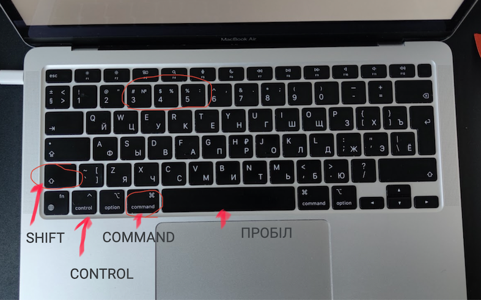
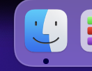
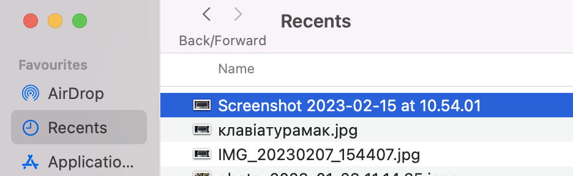
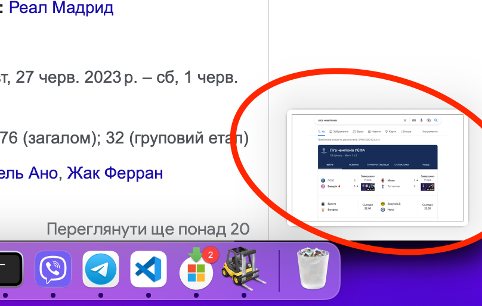
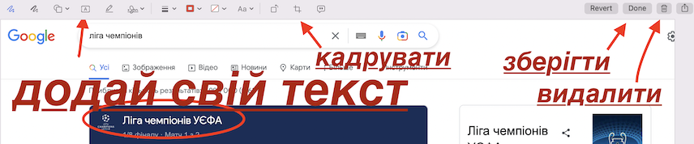

Зробити знімок екрану - це розповсюджена задача при роботі з макбуком і точно вам знадобиться в житті:), але інтуітивно здогадатись як це зробити не вийде.
Шукаєте клавішу PrintScreen? Тоді ми йдемо до вас!)
На відміну від Windows в Mac немає спеціальної клавіші для скрінів та використовують гарячі клавіші.
Отже я перевірив на практиці всі комбінації клавіш для скріншотів, поділюсь своїм досвідом як який метод зручніше та розповім простими словами які типи скрінів можна зробити, де їх знайти, як обрізати, відредагувати, як скопіювати скрін в буфер обміну.
Відповіді на питання про скріншоти на мак:
- Як зробити знімок екрану на Mac? Комбінації клавіш(гарячі клавіші) для скріншоту.
- Як скопіювати скрін в буфер обміну? Як скопіювати-вставити скріншот на мак?
- Як відкрити меню скріншотів на мак?
- Де знайти скрін? Місце збереження скріншотів на мак.
- Як змінити місце збереження скріншотів на мак?
- Як обрізати скрін? Відредагувати зображення скріна (додати текст та елементи малювання). Редактор зображень.
- Як відмінити скріншот?
- Як зробити скріншот панелі тачбар?
- Відео-інструкція. Показую як зробити знімок екрану на мак на прикладах.
- Часті питання про скріншоти на мак
Як зробити знімок екрану на Mac? Комбінації клавіш(гарячі клавіші) для скріншоту.
| Тип скріншоту | Комбінація клавіш |
|---|---|
| Скрін всього екрану | COMMAND SHIFT 3 |
| Скрін вікна програми | COMMAND SHIFT 4 ПРОБІЛ |
| Скрін обраної частини екрану | COMMAND SHIFT 4 |
| Відкрити спеціальне меню для скріншотів | COMMAND SHIFT 5 |
| Скопіювати скрін в буфер обміну | затискаємо клавішу CONTROL |
Як працюють комбінації клавіш? Все дуже просто, необхідно натиснути декілька клавіш на клавіатурі одночасно(тримати натиснуті разом), тоді спрацює комбінація клавіш. Наприклад комбінація клавіш COMMAND, SHIFT, 3 зробить знімок вього екрану

Як скопіювати скрін в буфер обміну? Як скопіювати-вставити скріншот на мак?
Якщо в момент створення скрінщоту затиснути клавішу CONTROL скріншот скопіюється в буфер обміну та його можна буде вставити в документ за допомогою комбінації клавіш COMMAND V. В такому випадку скрін не зберігається в пам'яті комп'ютера та його не можна відкрити в редакторі.
Де знайти скрін? Місце збереження скріншотів на мак.
Файл зображення за замовченням зберігається на рабочому столі. В програмі FINDER можна знайти у вкладці НЕДАВНІ. Назва скріншоту в виді дати коли він був зроблений(наприклад: Screenshot 2023-02-15 at 10.54.01.png).


Як змінити місце збереження скріншотів на мак?
Відкрийте меню скріншотів за допомогою комбінації клавіш COMMAND SHIFT 5.
У вкладці "Опції" в розділі "Місце збереження", оберіть нове місце для збереження скріншотів.
Як обрізати скрін? Відредагувати зображення скріна (додати текст та елементи малювання). Редактор зображень.
Одразу після скріншоту мініатюра зображення з'являється в нижньому правому куті екрану. Якщо на неї натиснути, забраження відкриється в редакторі де можна кадрувати, додати текст, елементи малювання(наприклад підкрестили або обвести необхідну ділянку).


Як відмінити скріншот?
Щоб вийти з меню скріншота треба натиснути клавішу ESC(перша клавіша у верхньому лівому куті клавіатури). Якщо скріншот вже зроблено і з'явилась мініатюра в нижньому куті, то натиснути на неї і в редактрорі натиснути на корзину(смітник)
Як зробити скріншот панелі тачбар?
Якщо у вас макбук про з тачбар, то ходять слухи що ви можете зробити навіть скрін тачбару за допомогою комбінації клавіш COMMAND SHIFT 6.
Відео-інструкція. Показую як зробити знімок екрану на мак на прикладах.
Підсумок, мій досвід та поради.
Якщо обирати одну комбінацію зі всіх - то в цілому найпростіше використовувати меню скрінтошів(СOMMAND SHIFT 5), де можна візуально обрати необхідний тобі варіант. Також в меню скріншотів лечше вирізати необхідний вам шматок екрану, якщо ви не дуже дружите з тачпадом (в меню скрінів зону виділення можна перетягувати та змінювати за допомогою крайніх точок, я не з однієї вивіреної спроби при затискання кнопки тачпаду). Але на своєму досвіді я в основному користуюсь комбінацією СOMMAND SHIFT 4 щоб вирізати необхідну мені частину екрану та копіюю в буфер обміну за допомогою CONTROL, якщо мені не треба редагувати зображення.
От і все на сьогодні, тепер ви можете робити скріни на мак як профі. Сподіваюся стаття була корисною та зрозумілою)
Часті питання
Як зробити скрін всього екрану на мак?
Щоб зробити знімок екрану треба використати гарячі клавіші COMMAND SHIFT 3.
Як зробити скрін частини екрану на мак?
Щоб зробити знімок частини екрану треба використати гарячі клавіші COMMAND SHIFT 4.
Як зробити скрін вікна на мак?
Щоб зробити скрін вікна треба використати гарячі клавіші COMMAND SHIFT 4 ПРОБІЛ.
Як обрізати скріншот на мак?
Є два варіанти. Або одразу зробити скріншот частини екрану за допомогою комбінації клавіш COMMAND SHIFT 4 або відкрити зображення скріншоту в редакторі зображень, натиснувши на мініатюру скріншоту та кадрувати зображення.
Де зберігаються скріншоти на Макбуці?
За замовченням скріншоти зберігаються на робочому столі макбуку. В програмі Finder скріншот можна знайти у вкладці "Недавні". Назва файлу містить слова "Знімок екрана" та дату його створення.